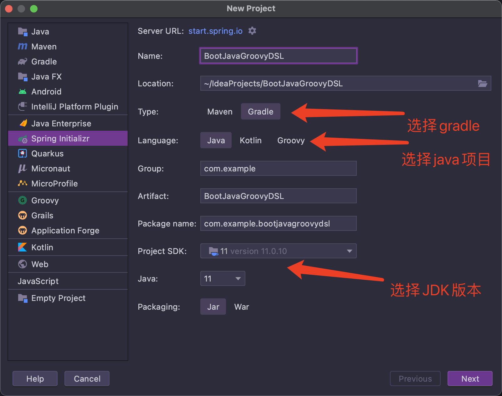
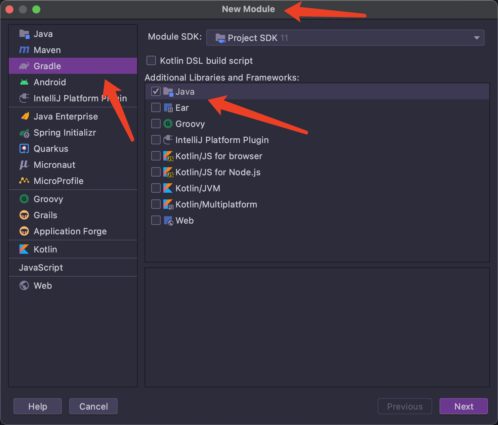
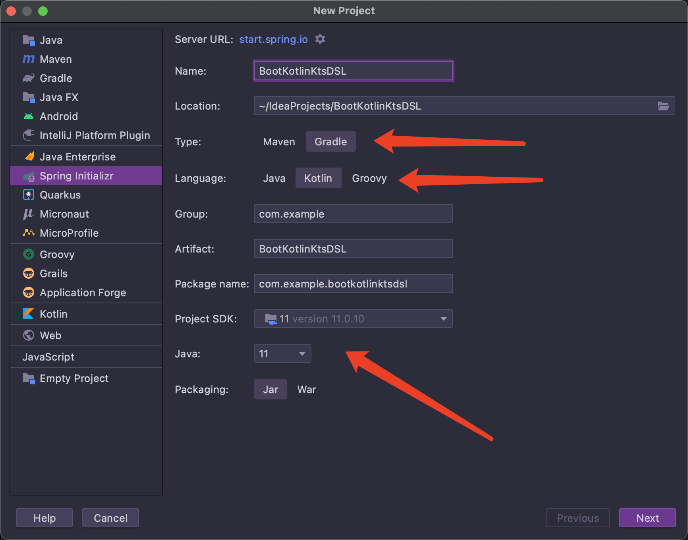
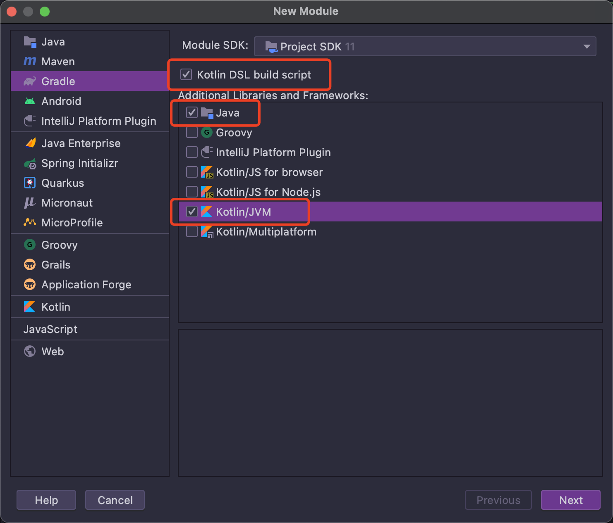

本节根据这篇博客 整理而成。
环境及版本
AdoptOpenJDK11
Gradle6.8.2
IDEA2021.1
SpringBoot2.4.5
Kotlin1.4.32
现在 IDEA 对于项目语言和配置文件语言的组合有默认的约定，如果创建的是 java 项目，那么默认配置文件使用 groovyDSL，而如果创建的是 kotlin 项目，则默认使用 kotlinDSL。
Java+GroovyDSL 创建项目 IDEA 中使用 spring initializr 创建新项目如图：

然后选择要引入的包，创建完成。
此时进入项目可以发现，配置文件名为build.gradle，是 groovy 语法。形如：
1 2 3 4 5 6 7 8 9 10 11 12 13 14 15 16 17 18 19 20 21 22 23 24 25 26 27 28 29 30 31 plugins { id 'org.springframework.boot' version '2.4.5' id 'io.spring.dependency-management' version '1.0.11.RELEASE' id 'java' } group = 'com.example' version = '0.0.1-SNAPSHOT' sourceCompatibility = '11' configurations { compileOnly { extendsFrom annotationProcessor } } repositories { mavenCentral() } dependencies { implementation 'org.springframework.boot:spring-boot-starter-web' compileOnly 'org.projectlombok:lombok' runtimeOnly 'org.postgresql:postgresql' annotationProcessor 'org.projectlombok:lombok' testImplementation 'org.springframework.boot:spring-boot-starter-test' } test { useJUnitPlatform() }
修改为多模块项目 首先删除 src 目录。因为作为根目录的项目不包含任何实际代码，只负责管理项目结构。
然后修改 build.gradle:
在底部添加一个 subprojects 块:
把 dependencies 和 test 块移入 subprojects 块中：
1 2 3 4 5 6 7 8 9 10 11 12 13 14 15 subprojects{ dependencies { implementation 'org.springframework.boot:spring-boot-starter-web' compileOnly 'org.projectlombok:lombok' runtimeOnly 'org.postgresql:postgresql' annotationProcessor 'org.projectlombok:lombok' testImplementation 'org.springframework.boot:spring-boot-starter-test' } test { useJUnitPlatform() } }
根据原配置文件的 plugins 块，在 subprojects 块的开头改写多条apply plugin语句：
1 2 3 4 5 6 7 8 9 10 11 12 13 14 15 16 17 18 19 20 21 22 23 24 25 plugins { id 'org.springframework.boot' version '2.4.5' id 'io.spring.dependency-management' version '1.0.11.RELEASE' id 'java' } subprojects{ apply plugin: 'org.springframework.boot' apply plugin: 'io.spring.dependency-management' apply plugin: 'java' dependencies { implementation 'org.springframework.boot:spring-boot-starter-web' compileOnly 'org.projectlombok:lombok' runtimeOnly 'org.postgresql:postgresql' annotationProcessor 'org.projectlombok:lombok' testImplementation 'org.springframework.boot:spring-boot-starter-test' } test { useJUnitPlatform() } }
务必注意，改写完毕后不能删掉原配置文件的 plugins 块！否则会导致构建错误！
这里涉及到 plugins 块与 apply plugin 语句的不同：plugins 块只能出现在配置文件头部，且只能引用 gradle 插件库中的插件；而 apply plugins 语句则可以出现在块中间。
添加子模块
右键点击项目名选择 new->module 创建子模块：

比如创建两个子模块分别叫 app 和 service。
修改子模块的配置文件
在 service 子模块的配置文件中删掉除了 repositories 块之外的所有部分，并加入 bootJar 和 jar 块，形如：
1 2 3 4 5 6 7 8 9 10 11 repositories { mavenCentral() } bootJar { enabled = false } jar { enabled = true }
在 app 子模块的配置文件中删掉除了 repositories 块之外的所有部分，并加入对 service 的引用，形如：
1 2 3 4 5 6 7 repositories { mavenCentral() } dependencies { implementation project(':service' ) }
测试
在 app 和 service 中创建约定的目录结构，如 src/main/java 等，以及 springboot 启动类，controller 和 service 等，即可进行访问测试，这里省略。
Kotlin+Kotlin DSL 创建项目 与 java+groovy 的组合类似：

配置文件将使用 kotlin 语法，形如：
1 2 3 4 5 6 7 8 9 10 11 12 13 14 15 16 17 18 19 20 21 22 23 24 25 26 27 28 29 30 31 32 33 34 35 36 37 import org.jetbrains.kotlin.gradle.tasks.KotlinCompileplugins { id("org.springframework.boot" ) version "2.4.5" id("io.spring.dependency-management" ) version "1.0.11.RELEASE" kotlin("jvm" ) version "1.4.32" kotlin("plugin.spring" ) version "1.4.32" } group = "com.example" version = "0.0.1-SNAPSHOT" java.sourceCompatibility = JavaVersion.VERSION_11 repositories { mavenCentral() } dependencies { implementation("org.springframework.boot:spring-boot-starter-web" ) implementation("com.fasterxml.jackson.module:jackson-module-kotlin" ) implementation("org.jetbrains.kotlin:kotlin-reflect" ) implementation("org.jetbrains.kotlin:kotlin-stdlib-jdk8" ) runtimeOnly("com.h2database:h2" ) runtimeOnly("org.postgresql:postgresql" ) testImplementation("org.springframework.boot:spring-boot-starter-test" ) } tasks.withType<KotlinCompile> { kotlinOptions { freeCompilerArgs = listOf("-Xjsr305=strict" ) jvmTarget = "11" } } tasks.withType<Test> { useJUnitPlatform() }
修改配置文件 同样地，先删除根项目的 src 目录。
1.添加 subprojects 块
把 dependencies 和 test 块移入 subprojects 块中：
1 2 3 4 5 6 7 8 9 10 11 12 13 14 15 16 17 18 19 20 21 22 23 24 subprojects { dependencies { implementation("org.springframework.boot:spring-boot-starter-web" ) implementation("com.fasterxml.jackson.module:jackson-module-kotlin" ) implementation("org.jetbrains.kotlin:kotlin-reflect" ) implementation("org.jetbrains.kotlin:kotlin-stdlib-jdk8" ) runtimeOnly("com.h2database:h2" ) runtimeOnly("org.postgresql:postgresql" ) testImplementation("org.springframework.boot:spring-boot-starter-test" ) } tasks.withType<KotlinCompile> { kotlinOptions { freeCompilerArgs = listOf("-Xjsr305=strict" ) jvmTarget = "11" } } tasks.withType<Test> { useJUnitPlatform() } }
根据原配置文件的 plugins 块，在 subprojects 块的开头改写多条apply plugin语句：
1 2 3 4 5 6 7 8 9 10 11 12 13 14 15 16 17 18 19 20 21 22 23 24 25 26 27 28 29 30 31 subprojects { apply { plugin("org.springframework.boot" ) plugin("io.spring.dependency-management" ) plugin("org.jetbrains.kotlin.plugin.spring" ) plugin("org.jetbrains.kotlin.jvm" ) } dependencies { implementation("org.springframework.boot:spring-boot-starter-web" ) implementation("com.fasterxml.jackson.module:jackson-module-kotlin" ) implementation("org.jetbrains.kotlin:kotlin-reflect" ) implementation("org.jetbrains.kotlin:kotlin-stdlib-jdk8" ) runtimeOnly("com.h2database:h2" ) runtimeOnly("org.postgresql:postgresql" ) testImplementation("org.springframework.boot:spring-boot-starter-test" ) } tasks.withType<KotlinCompile> { kotlinOptions { freeCompilerArgs = listOf("-Xjsr305=strict" ) jvmTarget = "11" } } tasks.withType<Test> { useJUnitPlatform() } }
注意这里与 groovy 的写法有了较大的不同。plugins 中的 kotlin 相当于org.jetbrains.kotlin的简写。
添加子模块

注意这里的勾选项。
同样也创建两个子模块分别叫 app 和 service。
修改子模块配置文件
与上面类似，app 模块的配置修改为：
1 2 3 4 5 6 7 repositories { mavenCentral() } dependencies { implementation(project(":service" )) }
而 service 的配置修改为：
1 2 3 4 5 6 7 8 9 10 11 repositories { mavenCentral() } tasks.bootJar { enabled = false } tasks.jar { enabled = true }
测试
启动类：
1 2 3 4 5 6 7 8 9 10 11 package com.exampleimport org.springframework.boot.SpringApplicationimport org.springframework.boot.autoconfigure.SpringBootApplication@SpringBootApplication class Application fun main (args: Array <String >) SpringApplication.run(Application::class .java, *args) }
controller:
1 2 3 4 5 6 7 8 9 10 11 package com.example.webimport com.example.service.IndexServiceimport org.springframework.web.bind.annotation .RequestMappingimport org.springframework.web.bind.annotation .RestController@RestController class IndexController val indexService: IndexService) { @RequestMapping(value = ["/index" ]) fun index () }
service:
1 2 3 4 5 6 7 8 9 package com.example.service.implimport com.example.service.IndexServiceimport org.springframework.stereotype.Service@Service class IndexServiceImpl : IndexService { override fun foo () "this is kotlin index" }
遗留问题：
如何创建扁平结构？
引入常用包？如 mybatis
整合 springcloud？
javakotlin 混编？